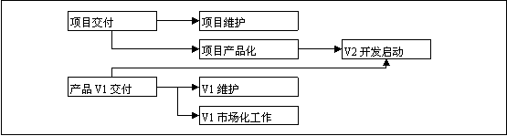
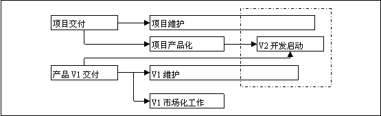
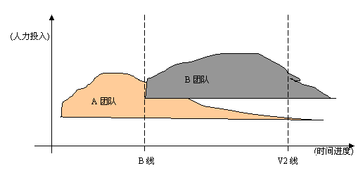

这一篇发布于2007.04月的InfoQ首期中文版中。
产品线工程：团队迭代及其问题
### 问题
项目到了末期，总是长期、持续的维护。这种维护的工作甚至占到了整个周期的三分之二以上。而维护工作过程中会发生什么，是少有人讨论的，因为对于多数工程专家来说，这是在“项目结束之后”的事件。
在我看来，维护周期的产出有一种可能：后续版本。这种情况大多数会出现在自主研发的产品上；源于客户需求，也会出现在一些面向客户的项目中。此外，基于客户项目的产品化，也是可能的输出。
这些输出的共同点是：没有改变项目的实质，而是对项目的延续或者完善。因此，客户项目的产品化也可以视为新版本，产品从技术研发到市场化也可以视为新版本。总之，项目的阶段性结束和持续维护，并不等于走向死亡，而可能是新版本的开始。这种过程如下图所示

该图很明显的表达了一种工程观点：V2与V1在两个不同的项目阶段中。这看起来很合理，甚至在实践中也常常这样做。但上图中潜在的问题是：如果维护工作的周期延长，则V2与维护存在资源争用。下图进一步描述这种可能性：

当出现这种资源争用的局面时，公司比较明智的做法，当然是强化维护工作，而延缓V2开发的启动。因为如果不维护，则会导致客户不满而流失既有市场，或因产品功能不完备而导致市场化受阻。
但是，我们不能直接通过持续维护的旧版本来产生新版本——后者应该是一个完整的、有独立性的产品。当资源争用出现时，公司的短期行为与产品的长期策略就不可避免的存在冲突。就我所知的，冲突的结果往往是：
>
> 旧版本得以维护，客户被短期满足；然后，
> 新版本的启动受阻，因此研发周期延后；然后，
> 同类产品竞争力加强，客户流失；然后，
> 新版本匆忙发布，功能与稳定性受到影响，客户流失加剧；然后，
> 产品线收益下降，团队萎缩，新旧版本都陷于维护，失去了更新版本的研发能力。
>
这种局面下，整个产品线便已经死亡了。而其根源，正是在于面临强大的市场压力时，旧版本交付与新版本启动过程占用了较多的时间，导致战略推进受阻。
如果一个公司有充足的资源，这可能不成其为问题。例如新、旧版本一旦可以用同等或渐增的规模来运作，或新版本不需要依赖于旧版本的资源（如人力和代码分支）。但大多数公司不会拥有这样充备、甚至是冗余的资源。
此外，在一些存在准入制度的，或者垄断的市场中，这也不成为问题。因为客户与开发商都是确定的，客户甚至愿意提供更多时间来保障旧版本的上线和投入实用。
除了上述情况，大多数时候我们都会为“下一个版本如何启动”的问题所困扰。而传统的工程模型中，并不讨论这个问题——产品的延续性会在项目可行性分析和公司战略层被讨论，但在“一个项目”被实施的过程中并不会被考虑。
本文假设需要两个团队来完成新、旧版本的更迭，并基于基本的工程原理，尝试通过组织方法与管理艺术来最小化这个过程的开销。并简单地说明“团队迭代”这种工程模式的原理、优势与问题。
### 项目基本过程的分解
RUP统一过程很好地解释了单个项目的各个阶段中，在客观上需要的资源投入情况。下面我们从设计者与实现者的两个角度来分析一下它：

对于业务建模、需求、分析与设计工作来说，在项目的先启与精化阶段，需要设计者（包括分析、设计和架构等）的大量参与；在构建阶段开始后，需求被（相对地）固化，而设计的调整也渐趋减少，而开发资源逐渐增加。直到后来，开发团队必然发现设计师、架构师和需求（用户）对他们指手划脚的时间越来越少，而测试团队却更深地影响着他们的开发计划——实施过程、测试过程等在不停的迭代，但计划与设计基本不变化。
一般来说，我们的大多数团队的人力资源用在“实现（编码）”，并以相对独立的团队来完成“设计”与“测试”。而这些团队的工作周期用工作量并不是一致的。以致于《人月神话》的作者会问：“在等待时，实现人员应该做什么？”
《人月神话》假设了一个“10个设计师、150人的开发团队”规模的项目。在这个项目中，程序经理提出了一个问题：体系结构团队需要10个月完成计划与设计，而他的150人却因此“只能坐在那儿干等10个月”。
Brooks提出的解决之道是“在（设计）说明完成的时候，才雇用编程实现人员”。当然，这是在三十年前的说法，大概会因此有人说这是“瀑布”的遗迹。但通过我们上面的分析，我们也应发现在客观事实上，先启、精化阶段与构建阶段所需要的人力资源的配比并不相同。以本例中的开发团队来说，在最初的10个月中，大概只需要8~20个开发人员参与到实现过程即可。
因此问题的本质并没有发生变化：在等待时，（剩下的130个）实现人员应该做什么？
然而接下来你也会发现，这个问题换个环境依然成立：在实现时，设计人员应该做什么？因为在构建阶段中，大多数的项目资源被消耗在实现和测试的循环里面，而构架、设计和需求存在（在项目周期中的）一致性，因此这些相关的设计、分析人员便处于“等待”状态。
### 基本定义
“10个设计师、150人的开发团队”，在总长度为3年的时间内，总是存在资源被空耗。Brooks对此的建议被推而广的结果是：在前期雇一批设计师，并在后期解散他们；对编程实现人员则反之。
我们应该认识到：这样反覆的组织结构，在一个公司来说是难于成为现实的。但是，对于以“职责分配”作为组织建构的基本原则的软件公司来说，我们可以给出一个简单的“AB团队模型”，并象下面这样看待问题：
>
> A团队以实现为主，在初期需要“设计工作”的引导并确定方向；
> B团队以设计为主，在设计的后期逐渐引入“实现工作”。
>
可见这两个团队对人力和时间的需求都将出现交叉。这种交叉会带来一种微妙的平衡。如下图所示：

这就是所谓的“团队迭代”。他讨论的不是A或B团队的具体工程方法，而是A和B团队出现重叠的这段时间里的工程方法。准确地说，就是这张图中B线和V2线所界定的时间区间中的工程方法。这两条线的基本定义是指：
>
> B线：B团队发起并从A团队开始争用富余资源的时间；
> V2线：B团队与A团队结束资源争用的时间。
>
### 组织的基本原则
我们现将面临一个问题，这个问题首先是与上面的这个“V2线”的名称有关。因为我们需要确定A、B两个团队的关系与组织模式。
之所以叫“V2线”，是因为我们必须确定B团队与A团队的工作目标，是在同一产品方面上的不同阶段。也就是说，B团队是在为A团队的后续版本而工作。如果没有这个前提，那么A、B的资源争用就是纯粹的战略方向之争，并不是工程方法所能解决的问题。
对于A、B两个团队的规模来说，A团队是当前目标的实现团队，因此所占用的资源（包括人力和管理资源）较多；B团队是将来目标的设计团队，因此所占用的资源较少且不紧急。从这两个团队的自身特点来说，A团队适合于用强化管理并使用里程碑方式来固化阶段成果，而B团队则适合以技术方式来领导。
这如同Brooks在《人月神话》中所设定的两种组织模型：产品负责人（项目经理）作为总指挥，技术主管充当其左右手；或反之。第一种模型是职权型的项目经理，这适合于大型和以产品为目标的团队（例如A团队）；而第二种模型则是辅助型的项目经理，由于是技术主管引导整个团队，因此更适合于以计划、分析和设计为主的团队（例如B团队）。
因此，在A、B团队中的组织与分工都是不同。虽然同样要求管理艺术，但A团队严谨些，B团队则更富有创意与激情。正是由于AB团队模型内部是互补的，而且在管理职责上，是同一产品上的自然延续，因此可以有效地避免管理和组织冲突。
### T线
组织结构中不存在职权冲突，并不等于不存在矛盾。AB团队模型与生俱来的问题就是“资源争用”。
在初起阶段，B线开始时，A团队中正好有部分人员（例如架构师）只需要投入较少的工作量，而他们正好在B团队所需的主要成员。在这时创建B团队，并不会感到太明显的资源争用。
然而B团队不可能总在“不停的计划和分析”，它必然要从A团队汲取资源，来完成设计阶段的实现、测试等工作。这个过程中发生的主要事件是“人力置换”，我们把它的起点位置称为“T线”。如下图所示：

由于A、B团队是同一项目的后续版本，因此当B团队出现的人力需求，是可以由A团队的富余人力来弥补的。——事实上正是如此，当B团队需要引入设计人员来组建时，A团队正好设计人员过剩；当B团队开始需要开发人员来实现时，A团队正好进入维护周期，开发人员会出现过剩。B团队从设计过程向实施过程完成过渡的同时，也就完成了从A团队吸纳人力的过程。
因此当B团队结束（开发型）项目团队的建设（或称为转变）的过程时，A团队也将进入项目的最终维护期。这个时候，最空闲的人力将是项目经理（事实A团队已经没剩下多少开发力量）。而B团队正好缺乏一个有实施经验的项目经理来驱动下一个阶段的工作。——换而言之，A团队的经理正好是B团队所需要的那个。
现在，对于A团队的经理来说，他在事实上持续地领导了相同项目前后两个版本的开发。而且开发人员在较大的程度上也是一致的。——可能由于项目的扩大，B团队还需要对外吸纳更多的人员，但骨干一定还是从A团队中迁移过来的部分。
### 优势
很明显，B团队快速地启动了V2项目，为产品的后续版本的开发活动赢得了充分的时间。在T线到V2线的时间里，将会有良好的分析、设计和团队组织与培训。由于人员基础上来自A团队，他们也会乐于提出问题，并在新版本中解决这些旧问题。
接下来，我们利用了人力。无论在哪个时间段内，人力都得到最充分的利用，A团队所富余的，正是B团队立时所需的。
最后，我们解决了Brooks的问题：在等待时，实现人员应该做什么？其实这个问题的根本于“等待”而不是“做什么”。我们应该问：为什么会有等待？显然，如果没有等待，那么我们的开发人员自然知道他该做什么。
团队迭代模式通过争用来消除了等待，使“等待时做什么”的问题变成了“如何平衡资源争用”。对于Brooks的原始问题，Brooks的答案是对的，但同时要付出“项目周期”的代价。而对于新的“平衡资源”的问题，我们在工程过程对资源的客观需求中找到了平衡点。通过在B线、T线和V2线之间合理地调配资源、分配管理职权和设定阶段目标，我们能够用灵活的管理技术和组织模式，来换得了更好的构架一致性、产品（线）延续性、团队的稳定性和（最重要的）更短的迭代周期。
### 冲突及其平衡
如果我们真的有两个团队或更大规模的团队资源，那么基于项目的迭代是不必须的。事实上，在一些公司里采用多个团队竞争的法则，从而得到新的版本或团队。但这些是以充备的资源为前提的，而且也无法避开向下兼容的问题。
而本文中的AB团队模型是强调合作的，两个团队一定是围绕相同的目标和设计在工作（因此必须一再提醒的是，如同《人月神话》中强调的一样：要保持设计的一致性）。如果这个前提不能被保证，那么AB团队模型无法消减其内部的冲突。
综合地来考虑，下列的因素是对团队迭代有害的：团队竞争、组织臃肿和不明确的产品线计划。
除了上述这些先期的可控因素之外，在项目过程中，我们还必须面临一些其它问题。
首先需要找到最好的切入点：B线。太早的话，A团队会因为受到太大的伤害而溃败；太晚则又牺牲了更多的时间，从而可能失去团队迭代的价值。
接下来，对于A团队的经理，从B线开始他将面临两种考验。第一个考验是立即到来的：他的团队可能变得有些混乱，因为部分人员开始面临两个项目的问题，一些人员会开小差，不知所措，另一些人员可能已经打好了铺盖卷。而从T线开始，A团队的经理迎来另一个考验：他必须要在人员逐渐流失的情况下控制好整个的团队。这个考验是最严峻的，因为A团队的经理如果控制不好团队的运作，那么项目可能不能保证市场化或满足用户需求。
最后的，也是最关键的问题：工程人员的素质。无论是现在，还是将来，应用“基于项目的迭代”这样的模型，都要求：
两个团队的负责人有良好的素质，他们围绕相同的目标在同共努力，而不是当前的具体工作，或阶段性的利益而争夺； 需要认识到在于B线－T线和T线－V2线这两个阶段中，所置换的人员的特性是不一样的。前者偏向设计与分析，后者着重实现能力； 两个团队的成员有良好的工程态度（不一定是经验），能理解团队结构变化的目的，以及乐于接受改变，接受新的工作。